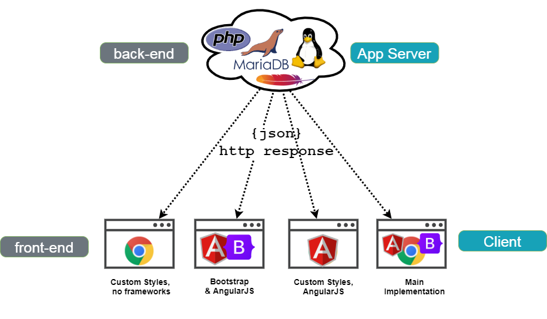

About this project
The aim of this project is to enable 2.5 second updates of weather data outside of the home network from a Davis Instruments weather station.
I have this weather station,
the outdoor sensor is mounted to the home gutter,
the indoor sensor/console unit is on my desk,

the indoor sensor/console unit displays weather data, such as wind speed and direction every 2.5 seconds,
I also have this add-on device, the WeatherLink Live,
it shows data through the WeatherLink app updating every 2.5 seconds,
The Problem
The 2.5 second updates are only available while connected to the home network. Outside of the home network, on the internet, the data only updates once every minute.
It would be nice to have updates every 2.5 seconds while away from home, anywhere in the world!
Core Requirement
Create an app that updates weather data every 2.5 seconds while away from home, anywhere in the world!
The Solution
Capture the weather data every 2.5 seconds from the weather station, and forward this data to the internet/cloud.
The internet/cloud is a website/app that will display the data, and refresh it every 2.5 seconds!
The Design
The design is a 3 part 'stack'. The Site Server, the App Server, and the Client.
The stack can be divided into two parts, the back-end and the front-end.
The Back-end
The back-end involves forwarding the weather data from the weather station to the App Server and making the data available to the web client/browser. This process involves the Site Server and the App Server software.
The Weather Station Site Server Daemon (wsssd)
The Weather Station Site Server (wsssd) is a software component developed in Java SE 11.
It captures data from the weather station via it's JSON API and forwards this data to the App Server's PHP receiving interface. This occurs every 2.5 seconds
continuously unless the service/daemon is stopped.
App Server Software
The Weather Station App (WSASEPP-Host) is the server software component developed in PHP7 and it uses MariaDB (SQL) for storage.
It provides the receive and get PHP interfaces for data collected from the weather station.
The receive PHP interface on the App Server receives the data from the Site Server and stores it in the MariaDB SQL database.
The get PHP interface provides/returns JSON data for the
front-end (html and JavaScript) client from the Site Server's MariaDB SQL database.
The App Server also provides the front-end software via html and
JavaScript for clients to view the weather data from the site.
The Font-end
The front end is the web page/UI that requests weather data from the App Server every 2.5 seconds.
This front-end software component is developed using html,
and JavaScript.
The front-end has been developed in 4 different implementations to demonstrate use of various front-end frameworks;
Custom Styles, no frameworks
Data retrieved and presented to user using plain JavaScript, css3, and html.
Custom Styles & AngularJS
This implementation uses the angular-js framework in it's JavaScript for easier binding of data
to page elements.
Bootstrap & Angular
Instead of having a custom stylesheet,
 bootstrap
bootstrap
angular-js used to bind data to page elements.
Main/Primary Implementation
This is the main and preferred version of the prototype app using mainly custom css styles, and utilising the strengths of
JavaScript,
angular-js is still used to bind data to page elements.
 Git Branch:
Git Branch: